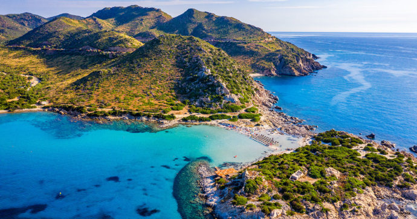

Sardegna
La Sardegna è una regione italiana a statuto speciale di 1 569 719 abitanti con capoluogo Cagliari. Istituita nel 1948, è divisa amministrativamente in quattro provincie, una città metropolitana e 377 comuni.
Ha un territorio di 24 090 km quadrati che ne fa la terza regione d'italia per superficie e terzultima per densità. E'situata nel mediterraneo occidentale e il suo territorio coincide con l'arcipelago sardo, costituito quasi interamente dall'isola di Sardegna e da un
considerevole numero di piccole isol e arcipelaghi circostanti.
La sua posizione strategica e la sua ricchezza di minerali hanno favorito nell'antichità il suo popolamento e lo svilupparsi di traffici commerciali e scambi culturali tra i suoi abitanti e i popoli rivieraschi.

Geografia fisica
Il paesaggio naturale della sardegna alterna profili montuosi dalla morfologia compllessa a macchie e foreste, stagni e lagune, torrenti tumultuosi che formano gole e cascate, lunghe spiagge sabbiose e scogliere frastagliate e falesie a strapiombo. Le formazioni calcaree costituiscono il 10% della sua superficie e sono presenti